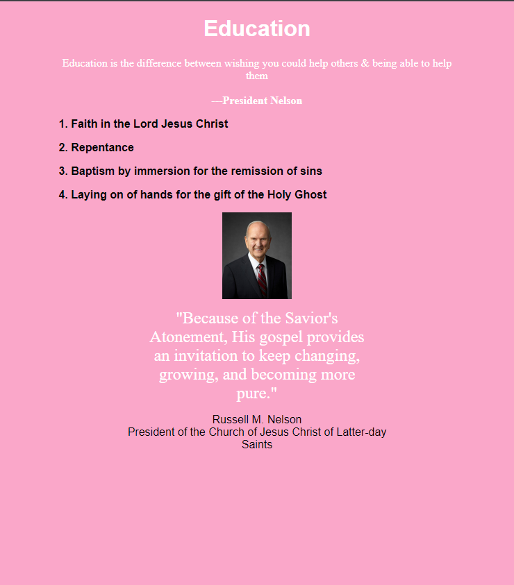

Portfolio
Rafting Site Project

In this project I developed a website for a rafting club, using html and css.
The colors were chosen according to the colors most present in that environment.
The font was chosen to bring a more adventurous experience. The images were chosen according to the places where rafting is practiced.
Chalenge 1 - WDD 130 Class
In this project I developed a page using HTML and CSS.
This page is dedicated to listing the first principles and ordinances of the gospel and sharing a quote from the Prophet and President of The Church of Jesus Christ Of Latter-day Saints.